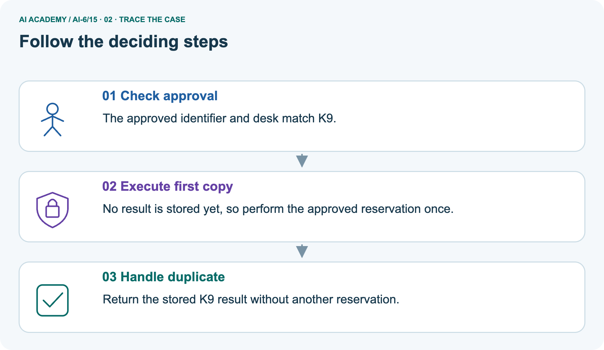
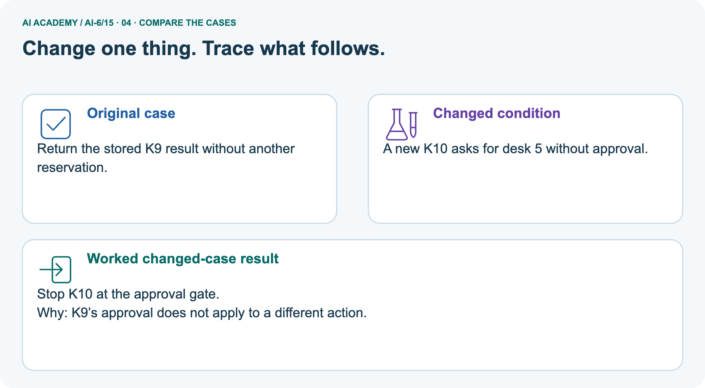
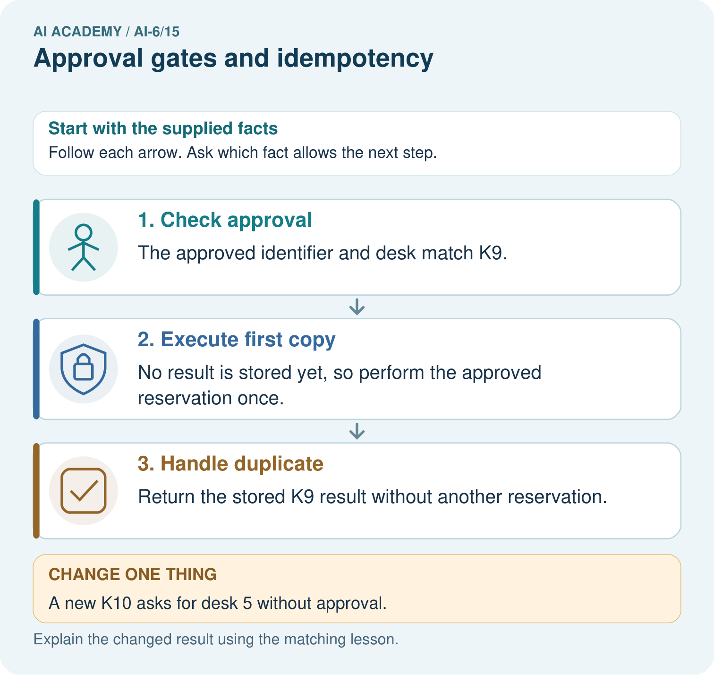
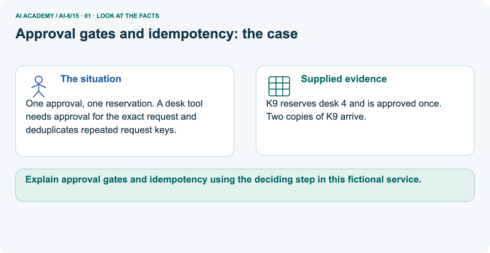
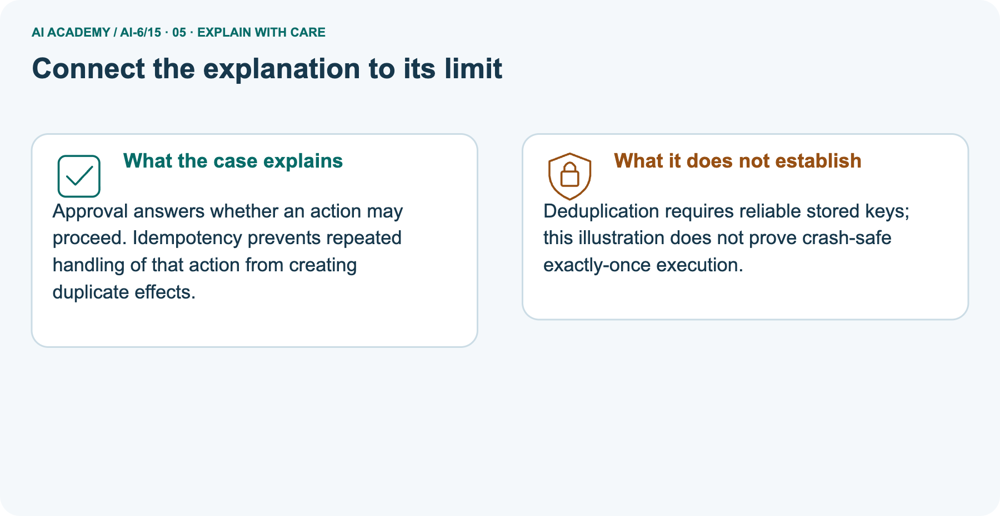
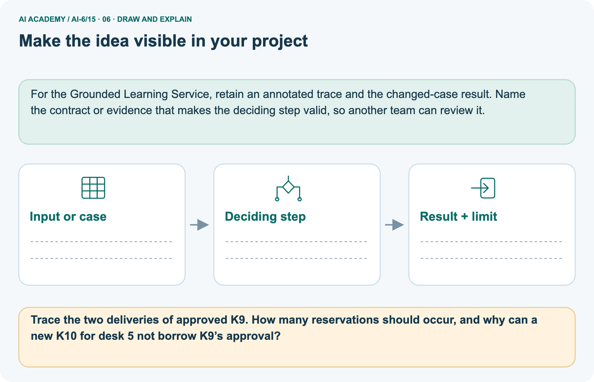

AI Academy · Level 6 · Grade 11 · Week 15 · Student lesson
Approval gates and idempotency
Learn to understand, design, build, test and explain AI systems responsibly.
Project: Grounded Learning Service
THE CONNECTED WEEK
Bind the approval. Identify the operation. Reuse only an identical retry.
Explain exact approval scope and sequential deduplication while retaining payload-conflict and persistence limits.
Keep one habit: Extended contract → first/retry/conflict ledger → desk picture → mutation/restart probes → executable trusted-fixture mock → independent room conflict.
Main lesson · Section 1
Approve the exact operation and make identical retries harmless
Permission to act and protection against duplicate effects solve different problems.
Learning goals
I can explain the mechanism and terminology of approval gates and idempotency.
I can apply the stated procedure to a new case with a traceable result.
I can identify an assumption or limitation and design a revealing follow-up.
Retrieve task authority and action prerequisites
Close your notes first. A rough first answer helps us choose the right starting point; it is not a score for your ability.
Without opening the old lesson, explain one key idea from Planning and action selection. Give an example and a mistake that the idea helps you avoid.
Without opening the old lesson, explain one key idea from Logs traces and privacy. Give an example and a mistake that the idea helps you avoid.
Without opening the old lesson, explain one key idea from Integration tests and fixtures. Give an example and a mistake that the idea helps you avoid.
After trying, check the relevant lesson or ask your teacher. Change the part of your explanation that the evidence shows was wrong.
Prerequisite and starting response
Recall Planning and action selection. Explain why a recorded result needs its input conditions and evidence source before it can support a claim.
End goal
Explain approval gates and idempotency using the deciding step in this fictional service.
Earlier wording, alternatives and picture transcripts
Your learning target
Remember before reading
This week you will practise:
Explain the mechanism and terminology of approval gates and idempotency
Apply the stated procedure to a new case with a traceable result
Identify an assumption or limitation and design a revealing follow-up
Retrieve what you already know
This week’s end goal
Main lesson · Section 2
Keep approval, operation identity and duplicate handling separate
The mock assumes a trusted approval registry; it does not obtain real approval.
Begin with an uncertain reply and safe retry
Suppose a classroom tool has an approved fictional send operation. It records one local effect, but the caller is unsure whether the reply arrived. Retrying the same logical operation should return the stored result rather than repeat the effect. That requires a stable key and an exact payload comparison. Separately, the action still needs matching trusted approval.
A key is not approval, and an old approval does not cover a different actor, destination or version.
Define approval gates and idempotency
Approval gates bind side effects to an actor, exact version and destination. Idempotency prevents repeated requests with the same key from repeating a committed effect.
Complete actor/key/payload/approval contract
| Extended local mock contract | Complete fixture rule |
|---|---|
| Trusted actor fixture | operator; real identity verification is not implemented |
| Logical operation key | K, scoped with actor in the in-memory ledger |
| Payload | operation send, version v1, destination D, fictional message body |
| Trusted approval A1 | Binds actor operator, key K and the entire exact payload |
| Identical retry | Matching approval and actor/key/payload return a copied stored result |
| Changed payload under K | Reject; even a separately matching approval cannot repurpose a committed key |
| Different actor or key with A1 | Reject mismatched approval |
| Effect | Append a local stub record only; no actual message or reservation |
| Persistence scope | Sequential one-instance memory only; no crash/concurrency/downstream guarantee |
Name supplied and missing evidence
Earlier wording, alternatives and picture transcripts
Begin by writing the question the procedure is intended to answer. Identify the information already supplied, the information it will produce and the information still missing.
These are constructed classroom examples; they do not require live accounts, private records or an external service. Do not treat a plausible explanation as a measured outcome.
Main lesson · Section 3
Trace first delivery, retry and conflict as distinct cases
An uncertain reply is not evidence that the first effect failed.
Original v1/D and committed-key mechanism
The mock submission requires approval for request version v1 and destination D. Store key -> committed result. Reusing the same key with the same payload returns that result; the same key with different payload is rejected.
Complete local call-by-call ledger
| Call or event | Approval check | Stored-key check | Local effect/result |
|---|---|---|---|
| First operator/K/v1/D with A1 | Exact match | No committed actor/K slot | Append 1 stub; store payload/result |
| Identical retry with A1 | Exact match | Same payload already committed | Return stored result; total 1 stub |
| Change to v2 but reuse A1 | Mismatch | No need to commit | PermissionError; still 1 stub |
| Change to v2 with matching A2 but same K | Approval matches revised payload | Conflicts with original committed payload | ValueError; still 1 stub |
| Borrow A1 for another actor or K2 | Mismatch | No new commit | Reject; still 1 stub |
| Mutate returned result copy | No new effect | Stored result protected by copying | Next identical retry still returns committed_stub |
State exact identity and approval assumptions
Before applying the procedure, write its units, denominator or decision boundary where relevant. A partner should be able to repeat each step using the same inputs.
If a required input is absent or violates the stated contract, record that condition explicitly instead of quietly replacing it with a convenient value.
Explain the visual
Point to the input, the deciding step and the result in this week’s visual. Explain the same step in ordinary words. A picture helps when you can say what each part represents.
Earlier wording, alternatives and picture transcripts
Approval gates and idempotency — evidence trace
Connect the picture and the explanation
Main lesson · Section 4
Change the payload or approval without changing history
An already committed key cannot become a different logical operation.
Current task and response
Approved send v1 to D uses key K, commits once, then caller retries K with the identical payload. Show the intermediate steps and give the conclusion with its scope.
Predict the new unapproved desk request
Change: A new K10 asks for desk 5 without approval.
Check after predicting
Prediction: Stop K10 at the approval gate.
Reason: K9’s approval does not apply to a different action.
Earlier wording, alternatives and picture transcripts
Compare a familiar case with a changed case
Change one thing in the pictured case
Main lesson · Section 6
Apply the same distinction to a separate reservation example
A duplicate authorized operation and a new unapproved operation are different cases.
Main identical-retry input and stored-result conclusion
Approved send v1 to D uses key K, commits once, then caller retries K with the identical payload.
Return the stored committed result; one effect total. A timeout alone is not evidence the first effect failed.
Keep the reasoning’s scope
Compare the intermediate evidence with the final statement. Explain why each number or decision follows from the stated inputs.
The conclusion belongs to this scenario and procedure; changing the inputs, evaluation population or authority can change what it establishes. Retain the raw record so a later revision can be compared honestly.
Separate desk fixture and exact approval identity
One approval, one reservation. A desk tool needs approval for the exact request and deduplicates repeated request keys.
K9 reserves desk 4 and is approved once. Two copies of K9 arrive.
The main mock send uses actor operator, key K and v1/D. The picture is a separate desk-reservation mock: approved K9 for desk 4 is delivered twice, so one local reservation stub is recorded and the duplicate returns its stored result. A different K10 for desk 5 cannot borrow K9’s approval. In the extended program each exact approval binds actor, operation key and full payload.
Both examples are in-memory simulations; neither sends a message or reserves a real desk.
Trace the first and duplicate K9 deliveries



Read the picture one step at a time
Approval answers whether an action may proceed. Idempotency prevents repeated handling of that action from creating duplicate effects.
Predict K10/desk5 without its own approval
Change one thing: A new K10 asks for desk 5 without approval. Predict the result before checking the explanation. What remains the same?
Check after predicting



Explain duplicate count and persistence limits
Deduplication requires reliable stored keys; this illustration does not prove crash-safe exactly-once execution.
Read the labelled picture: Trace the two deliveries of approved K9. How many reservations should occur, and why can a new K10 for desk 5 not borrow K9’s approval?
Reference: original compact dictionary-approval mock
Optional local lab: predict the printed result before running this standalone Python 3 example. Change one relevant boundary input, record the outcome and state the contract or statistical assumptions.
The program uses fictional values and the Python standard library; it performs no external operations.
from copy import deepcopy
class MockLedger:
"""In-memory classroom deduplication, not durable exactly-once delivery."""
def __init__(self):
self.committed = {}
self.effects = []
def submit(self, key, payload, approval):
if approval != payload:
raise PermissionError('exact approval required')
if key in self.committed:
(original, result) = self.committed[key]
if original != payload:
raise ValueError('idempotency conflict')
return deepcopy(result)
result = {'operation_id': key, 'status': 'committed'}
self.effects.append(deepcopy(payload))
self.committed[key] = (deepcopy(payload), deepcopy(result))
return deepcopy(result)
ledger = MockLedger()
payload = {"version": "v1", "destination": "D"}
ledger.submit("K", payload, payload)
ledger.submit("K", payload, payload)
print(len(ledger.effects))Earlier wording, alternatives and picture transcripts
Learn from the worked case
Cover the result before checking it. Say what is given, choose the procedure, and follow one step at a time. Then uncover the result and explain your first mismatch. Ask why a step is allowed, not only what number it produces.
A pictorial worked case: Approval gates and idempotency
The facts we will use



Why this result follows
What this example does not establish
Main lesson · Section 7
Know exactly what the deduplication mechanism protects
Stored keys and downstream behaviour determine the guarantee.
Core persistence/downstream qualification
A key prevents duplicate application effects only within the implemented persistence and downstream guarantees; it is not universal exactly-once delivery.
A useful check asks what would make the reasoning fail. Distinguish a failure to execute the declared procedure from a weakness in the procedure itself.
The first may require a correction; the second requires an explicitly revised method and new evidence. Preserve unsuccessful cases so an improved result cannot hide the original problem.
Complete approval, conflict, mutation and restart probes
| Approval or retry probe | Expected interpretation |
|---|---|
| Same actor/key/payload and matching trusted approval | Replay stored result without another local effect |
| Same key, changed version/destination/body | Reject conflicting operation content |
| New matching approval for changed payload but old committed key | Still conflict; use a properly planned new operation identity rather than rewrite history |
| Old approval with different actor or operation key | Reject; exact approved scope does not transfer |
| Timeout or lost response is suspected | Outcome may be uncertain; do not assume the first effect failed and blindly change the key |
| Returned result object is edited by caller | Copies keep the stored committed result unchanged in this mock |
| Fresh ledger instance after lost memory | Old commit is forgotten; a second local effect can occur |
| Sequential in-memory examples pass | No proof of durable, atomic, concurrent or downstream exactly-once execution |
| Original compact approval equals payload | A classroom equality check, not real actor-bound approval verification |
Guided explanation and repair
A report omits this qualification: A key prevents duplicate application effects only within the implemented persistence and downstream guarantees; it is not universal exactly-once delivery.
Explain how omitting it could change a reader's interpretation, and write an accurate replacement.
Earlier wording, alternatives and picture transcripts
Locate the earliest unsupported step
Main lesson · Section 8
Practise exact operation identity and safe retry reasoning
Name the actor, key, payload, approval and recorded effect count.
Current explanation and guided scope check
Explain the weekly mechanism in your own words. Use the worked scenario to name its input, decision rule and output.
Supported W2 record
Use workbook W2 for the connected example “Approval gates and idempotency”. First fill the input and rule boxes. Try the middle steps before asking for a hint. After a hint, try the next step yourself.
| Plan | Do | Check |
|---|---|---|
| What is given? Which rule or procedure applies? | Record each intermediate step. | Does the result follow? What remains unknown? |
Explain your trace to a partner. Your partner points to one step to check. Swap roles on the next case. Each person writes their own explanation.
Individual exactly-once overclaim check
Use the worked case for Approval gates and idempotency. Proposed explanation: “The worked result establishes every future case”. Decide whether this explanation is supported.
Point to the step or supplied fact that decides; explain your repair if needed.
Answer on your own before discussion. If you are unsure, say which step you need help with.
Desk picture response
Trace the two deliveries of approved K9. How many reservations should occur, and why can a new K10 for desk 5 not borrow K9’s approval?
Reserve independent committed-room key conflict
This is supported practice. Keep the separately named independent case for an attempt before feedback.
Earlier wording, alternatives and picture transcripts
Practise with less help: Trace the worked case
Check your reasoning
Explain the picture
Main lesson · Section 9
Run the complete approval, duplicate and persistence-boundary audit
Inspect both returned results and the local effect ledger.
Current identical v1/D retry investigation
Approved send v1 to D uses key K, commits once, then caller retries K with the identical payload. Show the intermediate steps and give the conclusion with its scope.
Complete runnable trusted-registry mock
"""Sequential in-memory effect stubs and trusted approval fixtures; no sending."""
from copy import deepcopy
class MockLedger:
def __init__(self,trusted_approvals):
self._approvals=deepcopy(trusted_approvals)
self.committed={}
self.effects=[]
def submit(self,actor, key,payload,approval_id):
if any(type(v) is not str or not v for v in [actor, key,approval_id]):
raise ValueError('invalid actor, key or approval identifier')
if (type(payload) is not dict or set(payload)!={'operation','version','destination','body'}
or any(type(v) is not str or not v for v in payload.values())):
raise ValueError('invalid payload schema')
approval=self._approvals.get(approval_id)
expected={'actor':actor,'key':key,'payload':payload}
if approval!=expected:
raise PermissionError('matching trusted approval required')
slot=(actor, key)
if slot in self.committed:
original,result=self.committed[slot]
if original!=payload:raise ValueError('idempotency payload conflict')
return deepcopy(result)
result={'operation_id':key,'status':'committed_stub'}
# This appends a local record only; no provider effect is executed.
self.effects.append(deepcopy(payload))
self.committed[slot]=(deepcopy(payload),deepcopy(result))
return deepcopy(result)
payload={'operation':'send','version':'v1','destination':'D','body':'fictional message'}
changed={**payload,'version':'v2'}
approvals={'A1':{'actor':'operator','key':'K','payload':payload},
'A2':{'actor':'operator','key':'K','payload':changed}}
ledger=MockLedger(approvals)
first=ledger.submit('operator','K',payload,'A1')
retry=ledger.submit('operator','K',dict(payload),'A1')
assert first==retry and len(ledger.effects)==1
print('Same approved operation retried:',first,retry,'effect stubs:',len(ledger.effects))
try:ledger.submit('operator','K',changed,'A1')
except PermissionError:print('Changed version with old approval rejected before another effect.')
else:raise AssertionError('Stale approval accepted')
try:ledger.submit('operator','K',changed,'A2')
except ValueError:print('Same key/different approved payload rejected as an idempotency conflict.')
else:raise AssertionError('Payload conflict accepted')
for actor, key,approval_id in [('other-actor','K','A1'),('operator','K2','A1')]:
try:ledger.submit(actor, key,payload,approval_id)
except PermissionError:pass
else:raise AssertionError('Approval borrowed for a different actor or operation key')
first['status']='changed returned copy'
assert ledger.submit('operator','K',payload,'A1')['status']=='committed_stub'
assert len(ledger.effects)==1
# Separate desk picture, its own exact approval and operation.
desk={'operation':'reserve','version':'v1','destination':'desk4','body':'fictional desk request'}
desk_ledger=MockLedger({'D1':{'actor':'desk-operator','key':'K9','payload':desk}})
desk_ledger.submit('desk-operator','K9',desk,'D1')
desk_ledger.submit('desk-operator','K9',desk,'D1')
try:desk_ledger.submit('desk-operator','K10',{**desk,'destination':'desk5'},'D1')
except PermissionError:pass
else:raise AssertionError('Desk5 borrowed desk4 approval')
assert len(desk_ledger.effects)==1
print('Separate desk K9 duplicates:',len(desk_ledger.effects),'stub; K10 denied')
# A new process/ledger instance has no remembered commits in this in-memory mock.
restarted=MockLedger(approvals)
restarted.submit('operator','K',payload,'A1')
assert len(ledger.effects)+len(restarted.effects)==2
print('Fresh in-memory ledger forgets the old commit; two instances recorded two separate stubs.')
print('No real actor verification, approval signature, persistence, concurrency safety, delivery or crash-safe exactly-once guarantee.')
Expected replays, conflicts and absent guarantees
Predict effect counts and error categories before running or tracing. The extended mock uses a supplied trusted approval registry and actor/key namespace; unlike the compact original snippet, it does not accept a caller-created payload as approval. It checks identical replay, stale approval, changed approved payload under the same key, borrowed actor/key approval and returned-copy mutation.
The separate desk fixture verifies K9 deduplication and K10 denial. A fresh in-memory ledger forgets the old commit and records a second stub, demonstrating the persistence limit. No real identity, approval signature, network delivery, concurrency control or durable transaction is implemented. Keep fixture results separate from any claim about real side effects.
Evidence ledger and reflection
| Record | Your evidence |
|---|---|
| Given input and fixed rule | |
| Prediction before checking | |
| Actual result, or “not run” | |
| First mismatch and one explanation | |
| Boundary or missing input and expected response |
On paper, trace the supplied procedure. If code is provided, predict before running it in a local practice file. Never write an expected answer as though it were an observed run.
Before trying: what do I expect, and why? While trying: which step could first go wrong? Afterwards: what did I actually observe, and what should change? Keep “not run” if you only traced the procedure.
Reference: original compact in-memory example
from copy import deepcopy
class MockLedger:
"""In-memory classroom deduplication, not durable exactly-once delivery."""
def __init__(self):
self.committed = {}
self.effects = []
def submit(self, key, payload, approval):
if approval != payload:
raise PermissionError('exact approval required')
if key in self.committed:
(original, result) = self.committed[key]
if original != payload:
raise ValueError('idempotency conflict')
return deepcopy(result)
result = {'operation_id': key, 'status': 'committed'}
self.effects.append(deepcopy(payload))
self.committed[key] = (deepcopy(payload), deepcopy(result))
return deepcopy(result)
ledger = MockLedger()
payload = {"version": "v1", "destination": "D"}
ledger.submit("K", payload, payload)
ledger.submit("K", payload, payload)
print(len(ledger.effects))Earlier wording, alternatives and picture transcripts
Predict, investigate and preserve the evidence
Plan → try → check
Main lesson · Section 14
Try alone: inspect a committed room key reused for another room
Keep the original logical operation identity fixed while diagnosing the conflict.
Complete independent room A/room B key task
Key J already committed room A. A retry uses key J but room B. What should happen?
First attempt and support record
Attempt this case before feedback. Record any help. Earlier examples below are further practice; a case already practised with feedback cannot establish fresh transfer.
Feedback after trying
Attempt the independent case before hints. Record whether you worked alone, used a hint or followed a model. After feedback, fix the first unsupported step and explain why it changed.
A later check uses a changed case, not a copied answer.
Earlier wording, alternatives and picture transcripts
Independent case: Apply a new case independently
Attempt this without hints
Key J already committed room A. A retry uses key J but room B. What should happen?
Record support used: none, hint or teacher explanation. After feedback, a different case is needed to demonstrate independence.
Use feedback to improve
Main lesson · Section 11
Save exact approval scope and idempotency behaviour together
Record operation identity, payload version, result and duplicate-effect evidence.
Project task and artifact
Add a labelled approval gates and idempotency evidence sheet to Grounded Learning Service. Show how you can explain the mechanism and terminology of approval gates and idempotency.
Use the supplied fictional case and keep its inputs, intermediate steps, calculation or prediction, and limitation. Connect this record to last week’s record; a matching answer without a trace is insufficient.
| Project evidence | Record |
|---|---|
| Component and version | |
| Inputs permitted at prediction time | |
| Trace and comparison with earlier work | |
| Failure, limit and human review |
Actual run or trace and limitations
For the Grounded Learning Service, retain an annotated trace and the changed-case result. Name the contract or evidence that makes the deciding step valid, so another team can review it.
Earlier wording, alternatives and picture transcripts
Evidence for your project
Main lesson · Section 16
Finish with a bounded duplicate-handling claim
One mock effect across two sequential calls does not establish universal exactly-once delivery.
Retrieve and explain
Close your notes. Explain this goal in your own words: Explain the mechanism and terminology of approval gates and idempotency
Plan a changed-case return
If you are unsure, return to the worked picture and explain one arrow. If you are ready, change an input or assumption and justify your prediction.
Save your workbook evidence. At the next review, try a different case before opening your old answer.
Reference bank and extra practice
Choose the reference that helps your next step.
Reference · Use service vocabulary precisely
Reference · Section 5
Reference · Use service vocabulary precisely
Connect each term to an input, operation, evidence source or outcome.
Vocabulary and your explanation
| Word | Meaning |
|---|---|
| Idempotency key | An identifier for deduplicating one logical operation |
| Approval gate | A required permission check before a side effect |
| Payload conflict | Different operation content under the same key |
Extra challenge · Explain a stronger case
Reference · Section 10
Extra challenge · Explain a stronger case
Choose the next challenge after the main route.
Explain,repair and extend
Explain the weekly mechanism in your own words. Use the worked scenario to name its input, decision rule and output.
A report omits this qualification: A key prevents duplicate application effects only within the implemented persistence and downstream guarantees; it is not universal exactly-once delivery.
Explain how omitting it could change a reader's interpretation, and write an accurate replacement.
For the worked scenario, propose one additional case that could reveal a failure, describe its expected outcome before running it, and explain what would need to remain fixed for a fair comparison.
Do not reuse W4 as a new final test after receiving feedback.
Explain → apply → challenge
Reference · Check the service reasoning and its limits
Reference · Section 12
Reference · Check the service reasoning and its limits
Use after practice; keep the selected independent case for its first attempt.
Current explanation and response
Complete the supported workbook tasks before attempting W4 independently. Record any hints or help used. After feedback, use the teacher's fresh retry rather than copying the earlier answer.
For a project, select a relevant new case, predict the outcome from the declared rule and preserve the result alongside any revision.
For the worked scenario, propose one additional case that could reveal a failure, describe its expected outcome before running it, and explain what would need to remain fixed for a fair comparison.
Do not reuse W4 as a new final test after receiving feedback.
Extra practice · Revisit the complete trace
Reference · Section 13
Extra practice · Revisit the complete trace
Predict before reading the supplied steps.
Complete trace and evidence
Complete evidence record
Approval gates and idempotency — evidence trace
Follow the input through the stated procedure to its result. Cover the result first, predict it, then explain every intermediate step. The text/table accompanies the figure so the example can be read without colour.
Reference · The earlier route checklist
Reference · Section 15
Reference · The earlier route checklist
Use one main route rather than repeating the lesson.
Targets,route and first prediction
Start with this question: One approval, one reservation. A desk tool needs approval for the exact request and deduplicates repeated request keys.
| By the end, I can | How I will show it |
|---|---|
| Explain the mechanism and terminology of approval gates and idempotency | Explain the deciding step, show a trace or test, and state one limit. |
| Apply the stated procedure to a new case with a traceable result | Explain the deciding step, show a trace or test, and state one limit. |
| Identify an assumption or limitation and design a revealing follow-up | Explain the deciding step, show a trace or test, and state one limit. |
Remember → watch and explain → try with help → investigate → try independently → keep project evidence. Your teacher may spread this lesson across several classes.
Keep your first prediction. Compare it with what the evidence shows and explain any change.
Extra practice · Predict,check and repair
Reference · Section 17
Extra practice · Predict,check and repair
Keep supported feedback separate from the independent case.
First supported question and optional hint
One approval, one reservation. A desk tool needs approval for the exact request and deduplicates repeated request keys.
Which labelled step matches this detail? Return the stored K9 result without another reservation.
1. Execute first copy
2. Check approval
3. Handle duplicate
Hint if needed: Read the steps in the pictorial case. Match the supplied detail to the stage that performs or records it.
Practice 1: explain the deciding evidence
Check after the first attempt
After your attempt, compare with the supported explanation: Handle duplicate Return the stored K9 result without another reservation. Approval answers whether an action may proceed.
Idempotency prevents repeated handling of that action from creating duplicate effects.
Changed-case question and optional hint
Changed-case practice: A new K10 asks for desk 5 without approval. Which conclusion is supported by the supplied facts?
1. Stop K10 at the approval gate.
2. We can decide the result without examining the changed input or the procedure.
3. This one example guarantees correct results for every future input.
Hint if needed: Use the changed condition and the deciding step in the pictorial trace. The answer must say what follows from those facts.
Practice 2: explain the deciding evidence
Check after the changed attempt
After your attempt, compare with the supported explanation: Stop K10 at the approval gate. K9’s approval does not apply to a different action.
Repair and retain the record
Review Planning and action selection (ai-6/14). Goal: Explain the mechanism and terminology of planning and action selection. Short practice: Choose a permitted plan when no approved tower-height card exists.
What new answer becomes supported after a card records 24 metres, and why could the bot not invent it earlier?. Return to this week and explain what you changed.
Review Logs traces and privacy (ai-6/12). Goal: Explain the mechanism and terminology of logs traces and privacy. Short practice: Identify the purpose of R17, C8 and 240 ms in the trace.
Which field is deliberately omitted, and why would logging the whole question violate this design?. Return to this week and explain what you changed.
Review Integration tests and fixtures (ai-6/9). Goal: Explain the mechanism and terminology of integration tests and fixtures. Short practice: Follow request N through the fixture and adapter.
Which source and item should appear in the reply, and what precisely fails when the adapter returns M?. Return to this week and explain what you changed.
The browser lab lets you edit the supported Python examples already included in this lesson. Predict first, run, inspect the actual output or error, change one input, then run again.
Keep code, predictions, actual results and a reasoned revision together. On paper, label your result as a trace rather than an execution.
Use Download completed work in the hosted lesson to export your answers, reflections, practice feedback and code-run evidence. Open the HTML copy to read or print it.
Drafts stay in this browser when storage is available; clear drafts on a shared device.
Earlier wording, alternatives and picture transcripts
Use this supported practice once, in the browser or on paper. Keep the reserved independent assessment for a separate first attempt before teacher feedback.
Repair a missing building block
Predict, run and debug
Keep your completed work
Reference · Six-picture concept journey
Reference · Section 18
Reference · Six-picture concept journey
Choose the picture that supports the current explanation.
01. Approval gates and idempotency: the case



One approval, one reservation. A desk tool needs approval for the exact request and deduplicates repeated request keys. Supplied facts: K9 reserves desk 4 and is approved once. Two copies of K9 arrive.
Point to the given fact that matters most. Explain why it matters.
02. Follow the deciding steps
Check approval: The approved identifier and desk match K9. → Execute first copy: No result is stored yet, so perform the approved reservation once. → Handle duplicate: Return the stored K9 result without another reservation.
Point to each numbered stage and explain which recorded input it uses.
03. Approval gates and idempotency — evidence trace


Approval gates and idempotency — evidence trace.
Approved send v1 to D uses key K, commits once, then caller retries K with the identical payload. | The mock submission requires approval for request version v1 and destination D. Store key -> committed result.
Reusing the same key with the same payload returns that result; the same key with different payload is rejected. | Return the stored committed result; one effect total. A timeout alone is not evidence the first effect failed.
Read the labels and values. Explain the relationship the model shows.
04. Change one thing. Trace what follows.
Original case: Return the stored K9 result without another reservation. Changed condition: A new K10 asks for desk 5 without approval. Expected result: Stop K10 at the approval gate.
Reason: K9’s approval does not apply to a different action.
Predict before checking the worked changed-case result. Name what changed and what the supplied facts allow you to conclude.
05. Connect the explanation to its limit



Approval answers whether an action may proceed. Idempotency prevents repeated handling of that action from creating duplicate effects.
Limit: Deduplication requires reliable stored keys; this illustration does not prove crash-safe exactly-once execution.
Explain the case, then point to a limit on the claim.
06. Make the idea visible in your project



For the Grounded Learning Service, retain an annotated trace and the changed-case result. Name the contract or evidence that makes the deciding step valid, so another team can review it.
Draw your input, deciding step, result and limit. Supported question: Trace the two deliveries of approved K9. How many reservations should occur, and why can a new K10 for desk 5 not borrow K9’s approval?
Draw your project trace and justify the deciding step using evidence.